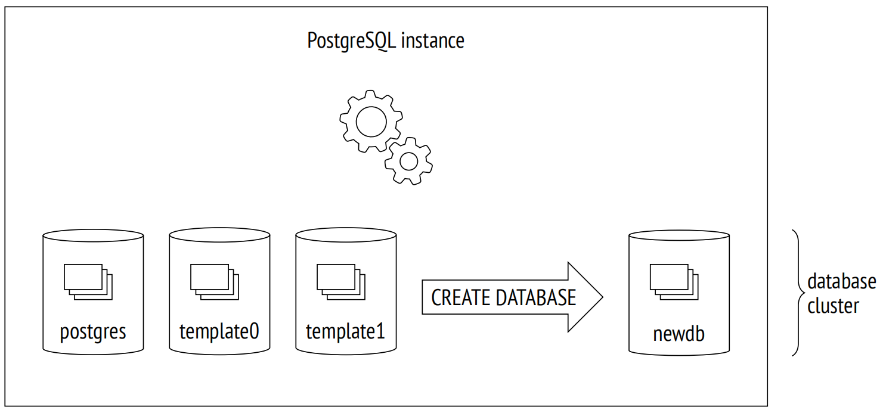
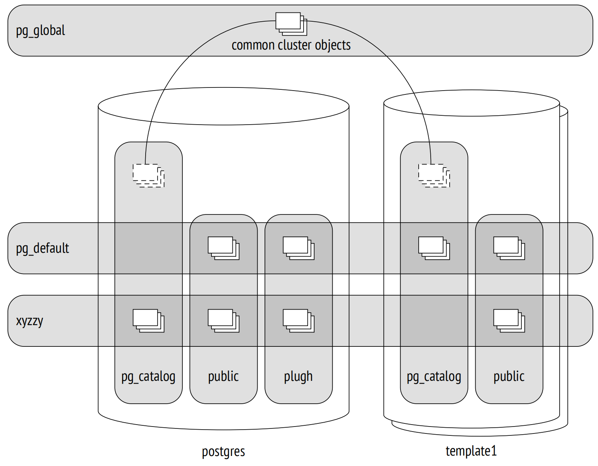
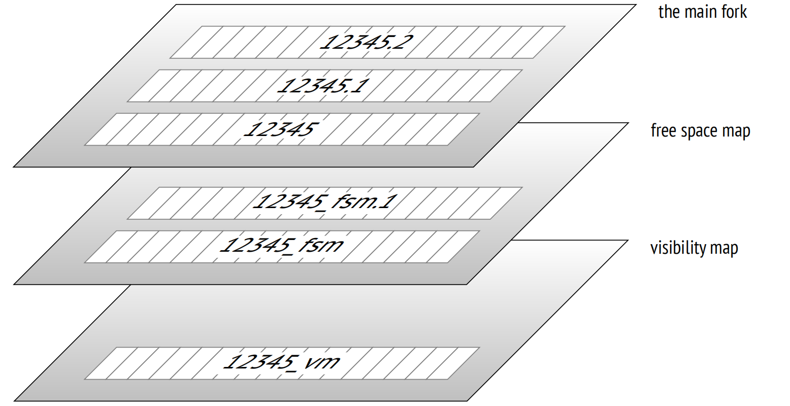

第 1 章：介绍
1.1 数据组织
1.1.1 数据库
PostgreSQL 是一种属于数据库管理系统类的程序。当此程序运行时，我们称之为 PostgreSQL 服务或实例。
PostgreSQL 管理的数据存储在数据库 1 中。单个 PostgreSQL 实例可以同时服务于多个数据库，它们一起被称为数据库集簇。
使用实例之前，你需要先初始化 2 (创建)。包含所有与集簇相关文件的目录通常被称为 PGDATA，此名称源自指向该目录的环境变量。
通过显式设置程序所需的所有参数，源自预建包的安装可以在 PostgreSQL 机制上添加自己的"抽象层"。在这种情况下，数据库服务以操作系统服务的形式运行，而你可能永远不会直接遇到 PGDATA 变量。但是这个术语本身已经十分成熟，所以我仍打算使用它。
集簇初始化之后，PGDATA 包含三个相同的数据库：
template0 用于从逻辑备份中恢复数据或创建一个含有不同编码的数据库等情况，绝对不可修改此数据库。
template1 作为用户在集簇中创建的所有其他数据库的模板。
postgres 是一个常规的数据库，你可以根据需要使用。
1.1.2 系统目录
所有集簇对象 (例如表、索引、数据类型或函数) 的元数据都存储在属于系统目录 3 的表中。每个数据库都有其自己的一组用于描述该数据库对象的表 (和视图)。有几个系统目录表是整个集簇共有的，它们不属于任何特定的数据库 (从技术上讲，使用的是一个 ID 为零的虚拟数据库)，但可以从所有数据库中访问这些表。
系统目录可以使用常规 SQL 查询进行查看，所有对系统目录的修改都是通过 DDL 命令执行的。psql 客户端还提供了一系列命令，用于显示系统目录的内容。
所有系统目录表的名称都以 pg_ 开头，比如 pg_database。列名通常以对应于表名的三个字母前缀开头，比如 datname。
在所有的系统目录表中，声明为主键的列称之为 oid (对象标识符)，其类型是一个 32 位整数，也被称为 oid。
在 PostgreSQL 中，oid 对象标识符的实现几乎与序列相同，但它出现得更早。其特殊之处在于，由公共计数器生成的唯一 ID 被用于不同的系统目录表。当分配的 ID 超过最大值时，计数器将重置。为了确保特定表中的所有值都是唯一的，下一个生成的 oid 会通过唯一索引进行检查；如果在这个表中已经使用过，计数器就会增加，然后再次检查。4
1.1.3 模式
模式 5 是存储数据库中所有对象的命名空间。除了用户模式，PostgreSQL 还提供了几个预定义的模式：
public 是用户对象的默认模式，除非指定了其他设置。
pg_catalog 用于系统目录表。
information_schema 为 SQL 标准定义的系统目录提供了一个替代视图。
pg_toast 用于与 TOAST 相关的对象。
pg_temp 由临时表所组成。虽然不同的用户在名为 pg_temp_N 的不同模式中创建临时表，但每个用户都使用 pg_temp 别名来访问他们的对象。
每个模式都限定在特定的数据库中，并且所有数据库对象都属于其中一个模式。
如果在访问对象时没有明确指定模式，PostgreSQL 会从搜索路径中选择第一个合适的模式。搜索路径基于 search_path 参数的值，该参数隐式扩展了 pg_catalog 和 (如有需要) pg_temp。这意味着不同的模式可以包含具有相同名称的对象。
1.1.4 表空间
不同于决定对象逻辑分布的数据库和模式，表空间定义了物理数据布局。表空间实际上是文件系统中的一个目录。你可以在表空间之间分布数据，使得归档数据存储在低速磁盘上，而频繁更新的数据则存储在快速磁盘上。
同一个表空间可以被不同数据库使用，并且每个数据库可以在多个表空间中存储数据。这意味着逻辑结构和物理数据布局并不相互依赖。
每个数据库都有所谓的默认表空间。除非指定了其他位置，否则所有数据库对象都在此表空间中创建。与该数据库相关的系统目录对象也存储在那里。
在集簇初始化期间，会创建两个表空间：
pg_default 位于 PGDATA/base 目录中；除非明确选择了另一个表空间，否则它会被用作默认表空间。
pg_global 位于 PGDATA/global 目录中；它存储着整个集簇公共的系统目录对象。
在创建自定义表空间时，你可以指定任意目录；PostgreSQL 会在 PGDATA/pg_tblspc 目录中创建指向该目录位置的符号链接。实际上，PostgreSQL 使用的所有路径都是相对于 PGDATA 目录的，这允许你将其移动到不同的位置 (当然，前提是你已经停止了服务)。
前一页的插图将数据库、模式和表空间放在了一起。此处， postgres 数据库使用表空间 xyzzy 作为默认表空间，而 template1 数据库使用 pg_default。表空间和模式的交叉处展示了各种数据库对象。
1.1.5 关系
尽管表和索引 (最重要的数据库对象) 之间存在着诸多差异，但它们有一个共同点：都由行组成。当我们联想到表时，这一点是不言而喻的，但对于 B 树节点 (包含索引值和对其他节点或表行的引用) 来说，这同样成立。
其他一些对象也具有相同的结构；比如序列 (实际上是单行表) 和物化视图 (可以认为是"保持"相关查询的表)。此外，还有一些常规视图，它们不存储任何数据，但在其他方面与表非常相似。
在 PostgreSQL 中，所有这些对象都被统称为"关系"。
我并不认为这是一个好的术语，因为它将数据库中的表与关系理论中定义的"真正"关系混淆了。在这里，我们可以感受到此项目的学术遗产和其创始人 Michael Stonebraker 将一切均视为关系的倾向。在他的一项工作中，他甚至引入了"有序关系"的概念，来表示行的顺序由索引定义的表。
关系的系统目录表最初被称为 pg_relation，但随着面向对象趋势的发展，它很快被重命名为我们现在熟悉的 pg_class。尽管如此，它的列仍然有 REL 前缀。
1.1.6 文件和分支
与关系相关的所有信息都存储在几个不同的分支 6 中，每个分支包含特定类型的数据。
起初，分支由一个单一文件表示。其文件名由一个数字 ID (oid) 组成，可以通过与分支类型相对应的后缀来扩展。
随着时间的推移，文件会增长，当其大小达到 1GB 时，就会创建该分支的另一个文件 (这些文件有时被称为段)。段的序列号会被添加到文件名的末尾。
1GB 的文件大小限制历史上是为了支持各种无法处理大文件的文件系统而设定的。在编译 PostgreSQL 时，你可以更改此限制 (./configure –with-segsize)。
因此，单个关系在磁盘上由多个文件表示。即使是没有索引的小表，也至少会有三个文件，对应于必需的分支数量。
每个表空间目录 (pg_global 除外) 都包含特定数据库的单独子目录。属于同一表空间和数据库的对象，其所有文件都位于同一子目录中。你必须要考虑到这一点，因为文件系统可能无法很好地处理单个目录中存在太多文件的情况。
有几种标准类型的分支。
主分支代表实际的数据：表行或者索引行。此分支适用于任何关系 (除了视图，视图中没有数据)。
主分支的文件以它们的数字 ID 命名，这些 ID 作为 relfilenode 的值存储在 pg_class 表中。
让我们看一下在 pg_default 表空间中创建的表的所属文件路径：
=> CREATE UNLOGGED TABLE t(
a integer,
b numeric,
c text,
d json
);
=> INSERT INTO t VALUES (1, 2.0, 'foo', '{}');
=> SELECT pg_relation_filepath('t');
pg_relation_filepath
−−−−−−−−−−−−−−−−−−−−−−
base/16384/16385
(1 row)base 目录对应于 pg_default 表空间，下一个子目录对应数据库，在这里我们找到了要查找的文件：
=> SELECT oid FROM pg_database WHERE datname = 'internals';
oid
−−−−−−−
16384
(1 row)
=> SELECT relfilenode FROM pg_class WHERE relname = 't';
relfilenode
−−−−−−−−−−−−−
16385
(1 row)这是文件系统上对应的文件：
=> SELECT size
FROM pg_stat_file('/usr/local/pgsql/data/base/16384/16385');
size
−−−−−−
8192
(1 row)初始分支 7 仅适用于无日志表 (使用 UNLOGGED 子句创建) 及其索引。此类对象与常规对象相同，不同之处在于对它们执行的任何操作都不会写入预写式日志。这使得这些操作的速度非常的快，但如果发生故障，将无法恢复一致的数据。因此，在恢复期间，PostgreSQL 会简单地删除此类对象的所有分支，并用初始分支覆盖主分支，从而创建了一个伪文件。
t 表以 unlogged 的方式创建，因此存在初始分支。它与主分支的名称相同，但带有 _init 的后缀。
=> SELECT size
FROM pg_stat_file('/usr/local/pgsql/data/base/16384/16385_init');
size
−−−−−−
0
(1 row)空闲空间映射 8 用于跟踪页内的可用空间。其容量一直在变化，vacuum 后变大，并在新的行版本出现时变小。空闲空间映射用于快速找到可以容纳被插入的新数据的页面。所有与空闲空间映射相关的文件都带有 _fsm 后缀。最初，不会创建此类文件，它们仅在必要时出现。获取它们最简单的方式是对表进行 vacuum：
=> VACUUM t;
=> SELECT size
FROM pg_stat_file('/usr/local/pgsql/data/base/16384/16385_fsm');
size
−−−−−−−
24576
(1 row)为了加快搜索速度，空闲空间映射以一棵树的形式组织，它至少有三个数据页 (因此即使是几乎空的表，其文件大小也会有所体现)。
空闲空间映射既适用于表，也适用于索引。但是，由于索引行不能被添加到任意页面 (例如，B 树根据排序的顺序定义插入位置)，PostgreSQL 只跟踪那些已经完全清空并且可以在索引结构中重用的页面。
可见性映射 9 可以快速显示页面是否需要被清理或冻结。 为此，它为每个表页面提供了两个比特位。第一个比特，为仅包含最新行版本的页面设置。vacuum 操作会跳过这样的页面，因为没有东西需要清理。此外，当某个事务尝试从这样的页面读取一行数据时，没有必要检查其可见性，因此便可以使用仅索引扫描。
当页面包含的行版本都已被冻结后，便会设置第二个比特。我将使用"冻结映射"术语来指代这部分分支。
可见性映射文件带有 _vm 后缀。它们通常是最小的文件：
=> SELECT size
FROM pg_stat_file('/usr/local/pgsql/data/base/16384/16385_vm');
size
−−−−−−
8192
(1 row)可见性映射文件适用于表，索引没有此文件。
1.1.7 页面
为了提升 I/O 效率，所有文件在逻辑上都被分割成页 (或者块)，表示可以读取或写入的最小数据量。因此，许多内部的 PostgreSQL 算法都针对页面处理进行了优化。
页面大小通常是 8 kB。在某种程度上可以配置页面大小 (最大 32 kB)，但只能在编译时进行配置 (./configure –with-blocksize)，但通常没有人这样做。一旦编译并启动，实例只能处理大小相同的页面，因此无法创建支持不同页面大小的表空间。
无论属于哪个分支，所有文件都被服务器以大致相同的方式进行处理。页面首先被移动到缓冲区缓存中 (在那里，页面可以被进程读取和更新)，然后根据需要刷回磁盘。
1.1.8 TOAST
每一行都必须适合单个页面：无法在下一个页面继续存储一行数据。为了存储较长的行，PostgreSQL 使用了一种称为 TOAST 10 (超长属性存储技术) 的特殊机制。
TOAST 涉及多种策略。你可以将长属性值移动到一个单独的表中，并将它们切成较小的"toasts"块。另一种选项是将长值进行压缩，以适合页面。或者你可以二者都做：先将值压缩，然后切分并移动。
如果主表包含可能很长的属性，那么会立即为其创建一张单独的 TOAST 表，用于其所有的属性。例如，如果某个表有一个 numeric 或 text 的列，即使该列永远不会存储任何长值，也会创建一个 TOAST 表。
对于索引，TOAST 机制只能提供压缩功能，不支持将长属性移动到一张单独的表中。这限制了可以索引的键的大小 (具体实现取决于特定的操作符类)。
默认情况下，根据列的数据类型选择 TOAST 的策略。查看所用策略的最简单方法是在 psql 中运行 \d+ 命令，但我将查询系统目录以获得更清晰的输出：
=> SELECT attname, atttypid::regtype,
CASE attstorage
WHEN 'p' THEN 'plain'
WHEN 'e' THEN 'external'
WHEN 'm' THEN 'main'
WHEN 'x' THEN 'extended'
END AS storage
FROM pg_attribute
WHERE attrelid = 't'::regclass AND attnum > 0;
attname | atttypid | storage
−−−−−−−−−+−−−−−−−−−−+−−−−−−−−−−
a | integer | plain
b | numeric | main
c | text | extended
d | json | extended
(4 rows)PostgreSQL支持如下策略：
plain 意味着不使用 TOAST (此策略适用于已知是"短"的数据类型，例如整数类型)。
extended 允许压缩属性并将它们存储在单独的 TOAST 表中。
external 意味着长属性以未压缩的状态存储在 TOAST 表中。
main 需要先压缩长属性，只有在压缩没有帮助的情况下时，它们才会被移动到 TOAST 表中。
一般而言，算法如下 11。PostgreSQL 的目标是在每个页面中至少包含四行数据。因此，如果行的大小超过了页面的四分之一，不包括行头大小 (对于标准大小的页面大约为 2000 字节)，那么我们必须对一些值应用 TOAST 机制。按照下面所描述的工作流程，一旦行的长度不再超过阈值，我们便停止：
-
首先，我们从最长的属性开始，遍历具有 external 和 extended 策略的属性。extended 属性会被压缩，如果压缩后的值 (单独考虑，不考虑其他列) 超过了页面的四分之一，那么它将被立即移动到 TOAST 表中。external 属性的处理方式相同，只是跳过了压缩阶段。
-
如果在第一个阶段之后这一行仍然不适合页面，我们将剩余使用 external 或 extended 策略的属性逐个移动到 TOAST 表中。
-
如果这也没有帮助，我们会尝试压缩使用 main 策略的属性，将它们保留在表页面中。
-
如果这一行仍然不够短，那么 main 属性将被移动到 TOAST 表中。
阈值是 2000 字节，但可以通过使用 toast_tuple_target 存储参数在表级别重新定义。
有时更改某些列的默认策略可能是有用的。如果事先知道特定列中的数据不能被压缩 (例如，此列存储 JPEG 图像)，那么你可以设置该列为 external 策略；这可以避免去徒劳地尝试压缩数据。策略可以按如下所示进行更改：
=> ALTER TABLE t ALTER COLUMN d SET STORAGE external;如果我们重复查询，我们将得到以下结果：
attname | atttypid | storage
−−−−−−−−−+−−−−−−−−−−+−−−−−−−−−−
a | integer | plain
b | numeric | main
c | text | extended
d | json | external
(4 rows)TOAST 表位于一个名为 pg_toast 的单独模式中；它不包含在搜索路径中，因此 TOAST 表通常是隐藏的。对于临时表，类似于 pg_temp_N，使用的是 pg_toast_temp_N 模式。
让我们来看看这个过程的内部机制。假设表 t 包含三个可能很长的属性；这意味着必须有一个相应的 TOAST 表。如下：
=> SELECT relnamespace::regnamespace, relname
FROM pg_class
WHERE oid = (
SELECT reltoastrelid
FROM pg_class WHERE relname = 't'
);
relnamespace | relname
−−−−−−−−−−−−−−+−−−−−−−−−−−−−−−−
pg_toast | pg_toast_16385
(1 row)
=> \d+ pg_toast.pg_toast_16385
TOAST table "pg_toast.pg_toast_16385"
Column | Type | Storage
−−−−−−−−−−−−+−−−−−−−−−+−−−−−−−−−
chunk_id | oid | plain
chunk_seq | integer | plain
chunk_data | bytea | plain
Owning table: "public.t"
Indexes:
"pg_toast_16385_index" PRIMARY KEY, btree (chunk_id, chunk_seq)
Access method: heap合乎逻辑的是，TOAST 行的结果块使用的是 plain 策略：没有第二级 TOAST。
除了 TOAST 表本身，PostgreSQL 在同一模式中还会创建相应的索引。此索引始终用于访问 TOAST 块。索引的名称显示在输出中，但是也可以通过执行以下查询查看：
=> SELECT indexrelid::regclass FROM pg_index
WHERE indrelid = (
SELECT oid
FROM pg_class WHERE relname = 'pg_toast_16385'
);
indexrelid
−−−−−−−−−−−−−−−−−−−−−−−−−−−−−−−
pg_toast.pg_toast_16385_index
(1 row)
27
=> \d pg_toast.pg_toast_16385_index
Unlogged index "pg_toast.pg_toast_16385_index"
Column | Type | Key? | Definition
−−−−−−−−−−−+−−−−−−−−−+−−−−−−+−−−−−−−−−−−−
chunk_id | oid | yes | chunk_id
chunk_seq | integer | yes | chunk_seq
primary key, btree, for table "pg_toast.pg_toast_16385"因此，TOAST 表将表使用的分支文件的最小数量增加至八个：主表三个，TOAST 表三个，TOAST 索引两个。
c 列使用 extended 策略，因此它的值会被压缩：
=> UPDATE t SET c = repeat('A',5000);
=> SELECT * FROM pg_toast.pg_toast_16385;
chunk_id | chunk_seq | chunk_data
−−−−−−−−−−+−−−−−−−−−−−+−−−−−−−−−−−−
(0 rows)TOAST 表是空的：重复的符号已经通过 LZ 算法压缩，因此这个值适合表页面。
现在让我们构造由随机符号组成的值：
=> UPDATE t SET c = (
SELECT string_agg( chr(trunc(65+random()*26)::integer), '')
FROM generate_series(1,5000)
)
RETURNING left(c,10) || '...' || right(c,10);
?column?
−−−−−−−−−−−−−−−−−−−−−−−−−
YEYNNDTSZR...JPKYUGMLDX
(1 row)
UPDATE 1此序列值无法被压缩，所以它被存储到了 TOAST 表中：
=> SELECT chunk_id,
chunk_seq,
length(chunk_data),
left(encode(chunk_data,'escape')::text, 10) || '...' ||
right(encode(chunk_data,'escape')::text, 10)
FROM pg_toast.pg_toast_16385;
chunk_id | chunk_seq | length | ?column?
−−−−−−−−−−+−−−−−−−−−−−+−−−−−−−−+−−−−−−−−−−−−−−−−−−−−−−−−−
16390 | 0 | 1996 | YEYNNDTSZR...TXLNDZOXMY
16390 | 1 | 1996 | EWEACUJGZD...GDBWMUWTJY
16390 | 2 | 1008 | GSGDYSWTKF...JPKYUGMLDX
(3 rows)我们可以看到字符被切成块。块大小的选择方式是：使得 TOAST 表的页面可以容纳四行。这个值在不同的版本中有所差异，取决于页头的大小。
当访问一个长属性时，PostgreSQL 会自动恢复原始值并返回给客户端，这一切对于应用来说无缝进行。如果长属性不参与查询，那么根本不会读取 TOAST 表。这就是为什么在生产解决方案中应避免使用 * 的原因之一。
如果客户端查询长值的前几个块，即使值已被压缩，PostgreSQL 也只会读取所需的块。
然而，数据压缩和切片需要大量资源；恢复原始值也是如此。这就是为什么将大量数据存储在 PostgreSQL 中并不是一个好主意，特别是如果这些数据正在被频繁使用，并且不需要事务逻辑 (如扫描的账户文件)。一个可能的更好选择是将这些数据存储在文件系统中，数据库中只保留相应文件的名称。但这样数据库系统就不能保证数据的一致性了。
1.2 进程和内存
一个 PostgreSQL 服务实例由多个相辅相成的进程组成。
服务启动时，启动的第一个进程是 postgres，传统上称之为 postmaster。它负责创建所有其他进程 (类 Unix 系统使用 fork 系统调用实现) 并管理它们：如果有任何进程失败，postmaster 会重新启动它 (或者如果存在共享数据已损坏的风险，则重启整个服务)。
由于其简单性，进程模型自 PostgreSQL 最初开始就一直在使用，并且自那以后，关于切换到线程的讨论就从未停止过。
当前模型有几个缺点：静态共享内存分配不允许动态调整缓冲区缓存之类的结构；并行算法难以实现，并且效率也不如预期的高；会话与进程紧密绑定。使用线程听起来前景很不错，尽管它涉及到一些与隔离性、操作系统兼容性和资源管理相关的挑战。然而，它们的实现将需要对代码进行彻底的重构和多年的工作，因此目前保守的观点占主导地位：在不久的将来，并不预期会有此类变化。
服务操作由后台进程维护。以下是主要的后台进程：
startup：在故障之后恢复系统。
autovacuum：从表和索引中移除过期数据。
wal writer：将 WAL 写入到磁盘中。
checkpointer：执行检查点。
writer：将脏页刷到磁盘。
stats collector：收集实例的使用统计信息。
wal sender：将 WAL 条目发送给副本。
wal receiver：在副本上接收 WAL 条目。
其中一些进程在任务完成后就会终止，其他一些进程则一直在后台运行，还有一些可以关闭。
每个进程都由配置参数管理，有时需要几十个参数管理。为了全面地配置服务器，你需要了解内部工作原理。但是通用考虑只会帮助你选择或多或少合适的初始值；之后，这些设置需要根据监控数据进行微调。
为了实现进程间的交互，postmaster 会分配共享内存，所有进程都可以访问该内存。
由于磁盘 (尤其是 HDD，但 SSD 也是如此) 的速度比 RAM 慢得多，因此 PostgreSQL 使用了缓存：保留一部分共享内存用于最近读取的页面，寄希望于这些页面会被多次使用，从而减少重复访问磁盘的开销。被修改的数据会在一定的延迟后再刷盘，而不是立即刷新。
缓冲区缓存占据了大部分的共享内存，共享内存中还包含其他由服务器用来加速磁盘访问的缓冲区。
操作系统也有其自己的缓存。PostgreSQL (几乎) 从不绕过操作系统机制而使用 direct I/O，因此这会导致双缓存。

如果发生故障 (例如断电或操作系统崩溃) ，存储在 RAM 中的数据会丢失，包括缓冲区缓存中的数据。保留在磁盘上的文件包括在不同时间点写入的页面。为了能够恢复数据的一致性，PostgreSQL 在其运行期间维护了预写式日志 (WAL)，这使得在必要时，可以重复执行丢失的操作。
1.3 客户端和服务端协议
postmaster 进程的另一项任务是监听传入的连接。一旦出现新的客户端，postmaster 便会生成一个单独的后端进程 12，并与该后端进程建立连接，开始会话。会话持续至客户端断开连接或连接丢失。
服务器必须为每个客户端生成一个单独的后端进程。如果许多客户端都在尝试连接，这可能会成为一个问题。
- 每个进程都需要 RAM 来缓存系统目录表、预备语句、中间查询结果和其他数据。打开的连接越多，需要的内存就越多。
- 如果连接是短而频繁的 (客户端执行一个小查询并断开连接)，那么建立连接、生成新进程和执行无意义的本地缓存的成本过高。
- 启动的进程越多，扫描它们的列表所需的时间就越多，而且这种操作非常频繁。因此，性能可能会随着客户端数量的增加而下降。
这个问题可以通过连接池来解决，它限制了生成的后端进程的数量。PostgreSQL 本身没有内置的连接池功能，因此我们必须依赖第三方解决方案：集成到应用服务器的连接池管理器或外部工具 (如 PgBouncer 13 或 Odyssey 14) 。这种方式通常意味着每个服务器后端进程可以依次执行不同客户端的事务。这对应用程序开发施加了一些限制，因为它只允许使用事务本地的资源，而不是整个会话的资源。
为了进行交互，客户端和服务器必须使用相同的接口协议 15。这通常基于标准的 libpq 库，但也有其他自定义的实现。
通俗地说，这种协议允许客户端连接到服务器并执行 SQL 查询。
连接总是代表一个特定的角色或用户建立到一个特定的数据库。尽管服务器支持数据库集簇，但你需要在应用中对每个数据库分别建立连接。此时会进行身份验证：后端进程验证用户的身份 (例如，通过请求密码) 并检查该用户是否有权限连接到服务器和指定的数据库。
SQL 查询作为文本字符串传递给后端进程，然后该进程解析文本、优化查询与执行，并将结果返回给客户端。
-
postgresql.org/docs/14/managing-databases.html ↩︎
-
postgresql.org/docs/14/app-initdb.html ↩︎
-
postgresql.org/docs/14/catalogs.html ↩︎
-
backend/catalog/catalog.c, GetNewOidWithIndex function ↩︎
-
postgresql.org/docs/14/ddl-schemas.html ↩︎
-
postgresql.org/docs/14/storage-file-layout.html ↩︎
-
postgresql.org/docs/14/storage-init.html ↩︎
-
postgresql.org/docs/14/storage-fsm.html
backend/storage/freespace/README ↩︎ -
postgresql.org/docs/14/storage-vm.html ↩︎
-
postgresql.org/docs/14/storage-toast.html
include/access/heaptoast.h ↩︎ -
backend/access/heap/heaptoast.c ↩︎
-
backend/tcop/postgres.c, PostgresMain function ↩︎
-
pgbouncer.org ↩︎
-
github.com/yandex/odyssey ↩︎
-
postgresql.org/docs/14/protocol.html ↩︎